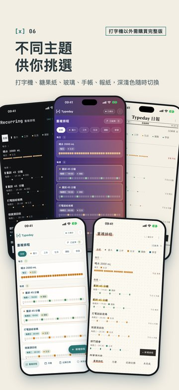
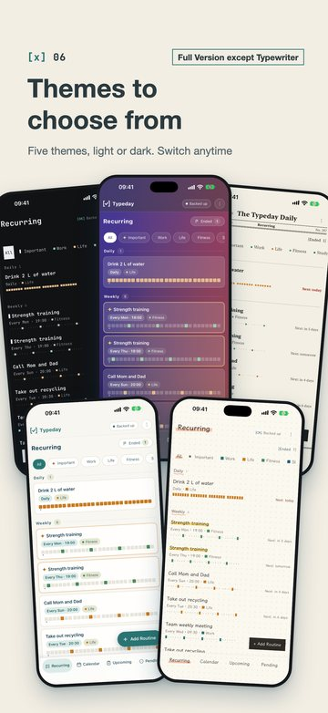

← 所有測試
Typeday：手帳、報紙主題（已做進 App）
五種主題到齊：打字機、糖果紙、玻璃、手帳、報紙。下面是真的 App 在模擬器裡拍的（示範資料）；每組五張：重複排程、月曆、近期任務、深色、英文介面（往左滑看後面幾張）。
手帳
- 點點方格紙，字是手寫風的霞鶩文楷（英文、數字也是手寫風）。
- 頁名下面貼一段紙膠帶；分組標題下面一條波浪線。
- 勾選是子彈筆記的寫法：還沒做是「•」，做完畫上「×」（一筆一筆畫上去）。
- 重要的事用黃色螢光筆畫過；月曆上的重要事件是手寫的「＊」，今天用手畫的圈圈起來。
- 選到的分頁、篩選、表單選項都是畫一筆珊瑚色螢光筆（不再是黑色反白塊）。
報紙
- 報頭「Typeday 日報」（英文是 The Typeday Daily），左邊是備份狀態、右邊是選單。
- 報頭下面一行：日期、現在這一頁的名稱、「第 287 期」（今年第幾天）；再一道雙線。
- 中文是明體（Noto Serif TC）、英文與數字是 New York；勾選是印刷的方框打勾。
- 分組小標是紅字，重要的事前面是紅色 ◆；分頁列上方雙線、選中的紅字加紅線。深色就是「夜間版」。
主題面板與選單
選單的「主題」改成一顆按鈕（五種排不下一列），點了開這個面板：五種主題各有小預覽。打字機以外的需要完整版。
字型（10-13 更新）：手帳是霞鶩文楷、報紙的中文是 Noto Serif TC（明體），都是開源字型、直接包在 App 裡——選了馬上換，不用下載、不用網路。
（原本用 Apple 的可下載字型，手機用行動網路時卡在 0%，所以改掉。）字型只收常用字，很少見的字會用系統字補上。
App Store 截圖 06（五種主題）

中文
英文同一頁（重複排程）換成五種外觀：後排打字機（深色）、玻璃、報紙，前排糖果紙、手帳。標記改成「打字機以外需購買完整版」。